- Pokemon Sun and Moon (3DS)
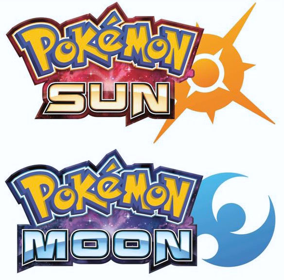
Pokémon Sun e Pokémon Moon chegam ao Nintendo 3DS após muita expectativa.
O momento não poderia ser mais oportuno: 20 anos após o lançamento dos primeiros jogos, a franquia vive o
sucesso absoluto em todos os seus produtos.
Sendo assim, Sun e Moon são a oportunidade de coroar um ano perfeito.
Para isso, além das melhorias nos gráficos e na jogabilidade, toda a estrutura do game foi reinventada, e
o resultado é excelente.
Como os antigos clássicos, você começa em alguma cidade, ganha a pokedex e algumas bolas pokémon para
começar a se tornar o melhor treinador do mundo!
- FIFA 2017 (PS4)
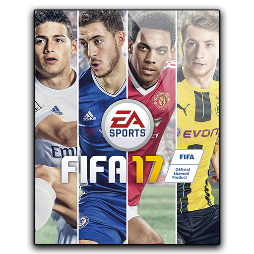
Fifa 17 muda pouco para manter a fórmula de sucesso que o torna o principal título do gênero.
As melhorias na jogabilidade deixam o game mais dinâmico e exigem mais da habilidade do jogador.
Já os gráficos receberão a nova engine de braços abertos e apresentam uma evolução visual.
A inclusão do modo The Journey é uma aposta que deu certo e que pode vir a conquistar um novo
público. Em The journey você pode jogar construíndo a carreira do seu time.
- Uncharted 4: A Thief’s End (PS4)

Um jogo que ao mesmo tempo é mais do mesmo (o que necessariamente, não é uma coisa ruim nesse
caso) e também nos trouxe algumas novidades como uma história um pouco mais séria se
compararmos com os outros títulos da franquia e algumas inovações com relação ao gameplay.
A corda e o stealth que o jogo nos oferece, nos dão opções inéditas para engajar em certos
encontros de várias maneiras possíveis.
O restante das mecânicas tradicionais da franquia está de volta, só que de forma mais refinada
do que nunca, contando com o carisma dos personagens centrais em grandes aventuras ao redor do
mundo. Em termos gráficos e sonoros o jogo é um verdadeiro espetáculo e o jogador é convidado
a parar e admirar seus cenários em muitos momentos da jornada.
Mesmo com uma variedade de ambientes generosa, não existe parte deste mundo que não seja digna
de admiração, seja em cidades populosas ou ilhas paradisíacas.
- Call Of Duty: Infinite Warfare (PS4)
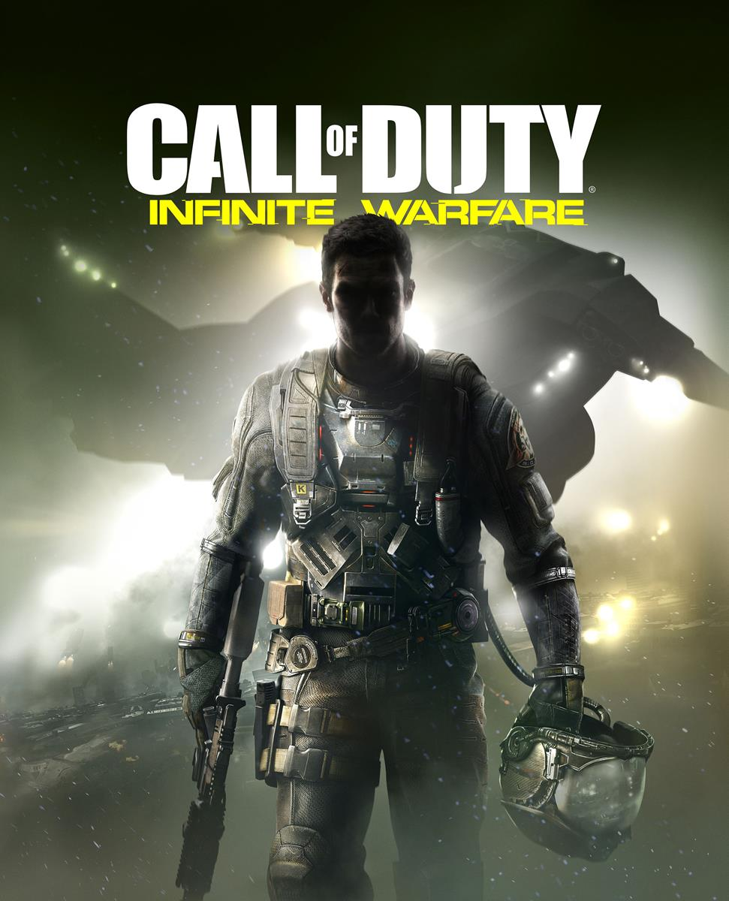
Call of Duty: Infinite Warfare é o novo jogo da cultuada franquia da Activision lançado
para PS4, Xbox One e PC.
Desenvolvido pelo estúdio Infinity Ward, o mesmo por trás de Call of Duty: Ghosts e
Modern Warfare 4, o título avança em sua proposta futurista ao trazer confrontos no
espaço.
O jogo apresenta batalhas e cenas em espaço e em terceira pessoa e tem uma história
campanha que prende, assim como a qualidade de seus gráficos, sons, e jogabilidade.
- Battlefield 1 (PS4)

Battlefield é o novo jogo da clássica franquia da EA Games. Lançado para PC, PS4 e
Xbox One, o game de tiro em primeira pessoa apresenta gráficos primorosos e
multiplayer viciante.
Enquanto o rival Call of Duty explora o futuro em Infinite Warfare, o jogo da DICE
recria magistralmente a atmosfera da Primeira Guerra Mundial.
- Call Of Duty: Black Ops 3 (PS4)
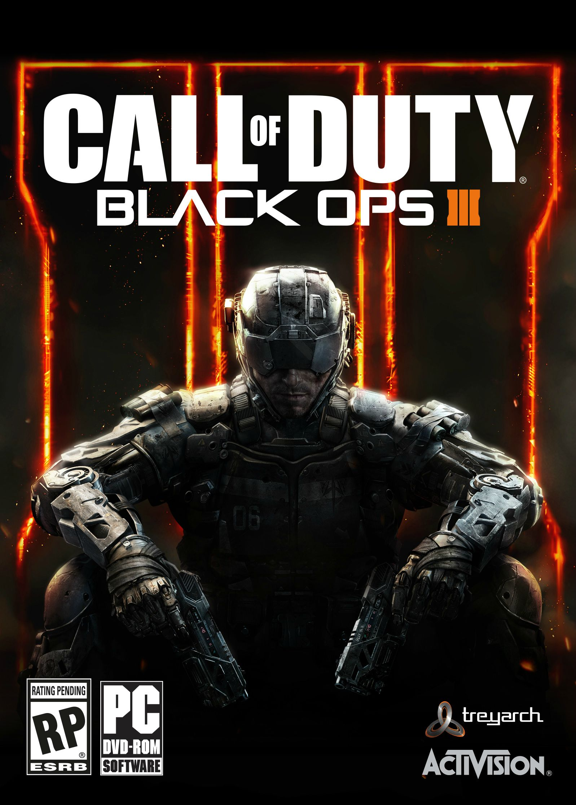
Call of Duty: Black Ops 3 é a mais recente versão do game de tiro anual da
Activision, desta vez desenvolvido pela Treyarch.
Lançado para Xbox One, PS4, Xbox 360, PlayStation 3 e PC, o jogo dá
continuidade à longa tradição da franquia em multiplayer online, e também
revitaliza o modo campanha com algumas novidades.
- Tom Clancy’s: The Division (PS4)
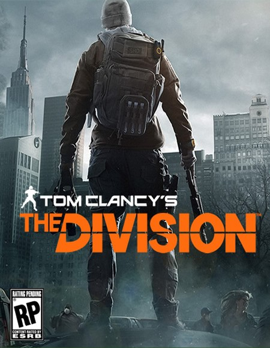
The Division é o novo jogo online da Ubisoft para PS4, Xbox One e PC.
O título foi anunciado na feira E3 2013 e, desde então, é alvo de
polêmicas que envolvem sua qualidade gráfica e variedade. O game
manteve forte presença em todas as apresentações da empresa antes do
lançamento e traz uma nova forma de jogar online
- Grand Theft Auto V (PS4)

GTA 5 é o novo jogo da premiada série de mundo aberto da
Rockstar Games.
De volta à cidade de Los Santos, mesma de GTA: San Andreas, e
cheio de novidades, o game se firma como um dos melhores de
todos os tempos - já que, certamente, é o mais caro da história,
com um custo estimado de US$ 266 milhões.
- Overwatch (PC)

Overwatch é a nova empreitada da poderosa Blizzard,
empresa popularmente conhecida por produzir games de RPG e
estratégia. A aposta no popular gênero FPS deu certo,
trazendo um título simples de se jogar e eficiente nos
quesitos técnicos para o PC, PS4 e Xbox One.
- Final Fantasy XV (PS4)
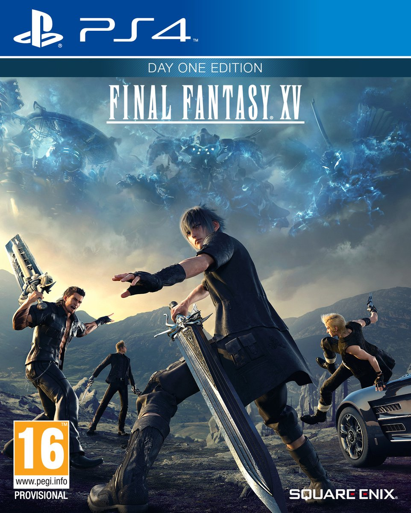
Final Fantasy XV é o novo jogo de RPG da Square Enix.
Finalmente lançado para PS4 e Xbox One após um
ciclo de desenvolvimento que durou mais de dez anos,
o game supera todas as expectativas e se consagra
como um dos melhores capítulos da série, e um dos
grandes RPG da história.
- Melhor Filme - Moonlight: Sob a Luz do Luar
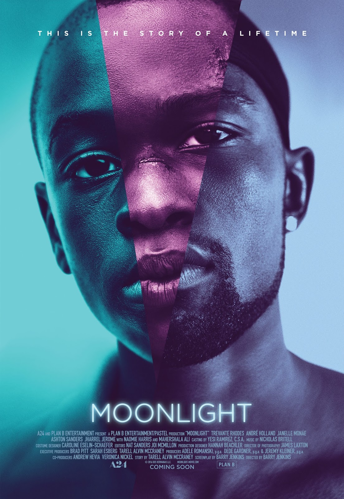
Crônicas da vida de um jovem negro, desde a infância até a idade adulta,
e suas dificuldades para encontrar seu lugar no mundo,
enquanto cresce em um subúrbio de Miami.
- Melhor Diretor - Damien Chazelle
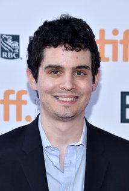
Damien Sayre Chazelle (Providence, 19 de janeiro de 1985) é um cineasta e roteirista
estadunidense. Estreou sua carreira em 2009, com Guy and Madeline on a Park Bench, e
teve seu primeiro destaque internacional em Whiplash, filme esse que teve cinco
indicações ao Oscar 2015. Em 2016, estreou o seu novo projeto La La Land, escrito e
realizado por ele mesmo.
- Melhor Atriz - Emma Stone
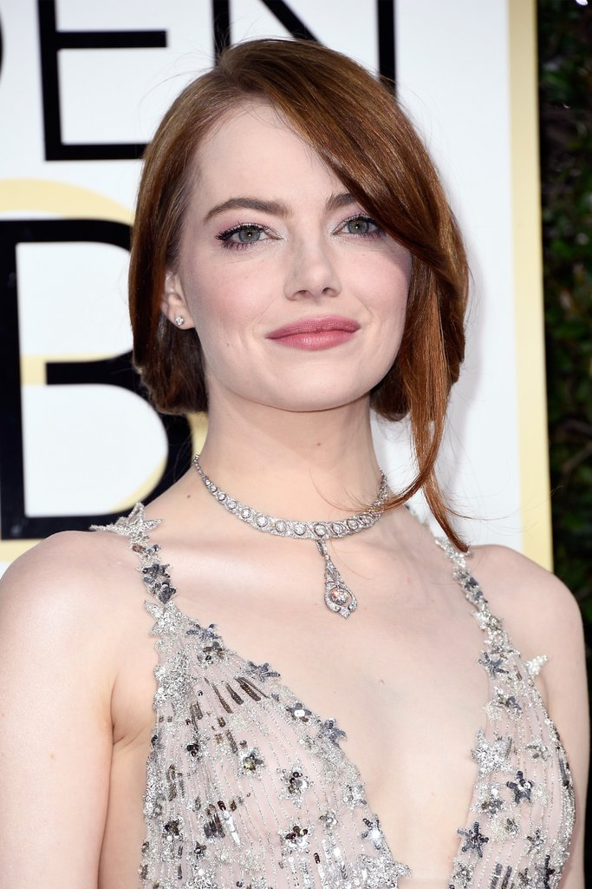
Stone começou sua carreira como atriz mirim atuando em peças teatrais até
ganhar reconhecimento pelo seus desempenhos em Superbad (2007) e Zumbilândia (2009).
Conhecida pela cómica Olive Penderghast em Easy A, a escritora Skeeter em The Help,
a heroína Gwen Stacy em The Amazing Spider-Man e a protagonista Mia Dolan em La La Land.
- Melhor Ator - Casey Affleck
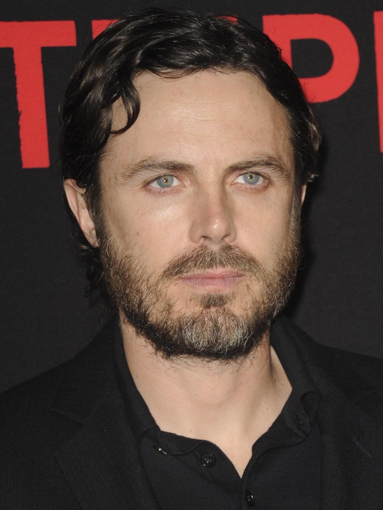
Casey Affleck (Caleb Casey McGuire Affleck-Boldt, Falmouth, 12 de agosto de 1975)
é um ator e diretor norte-americano. Ao longo da década de 1990 e início de 2000,
desempenhou papéis coadjuvantes em filmes como Good Will Hunting (1997) e
Ocean's Eleven (2001), bem como em filmes independentes, como Chasing Amy (1997).
- Melhor Atriz Coadjuvante - Viola Davis
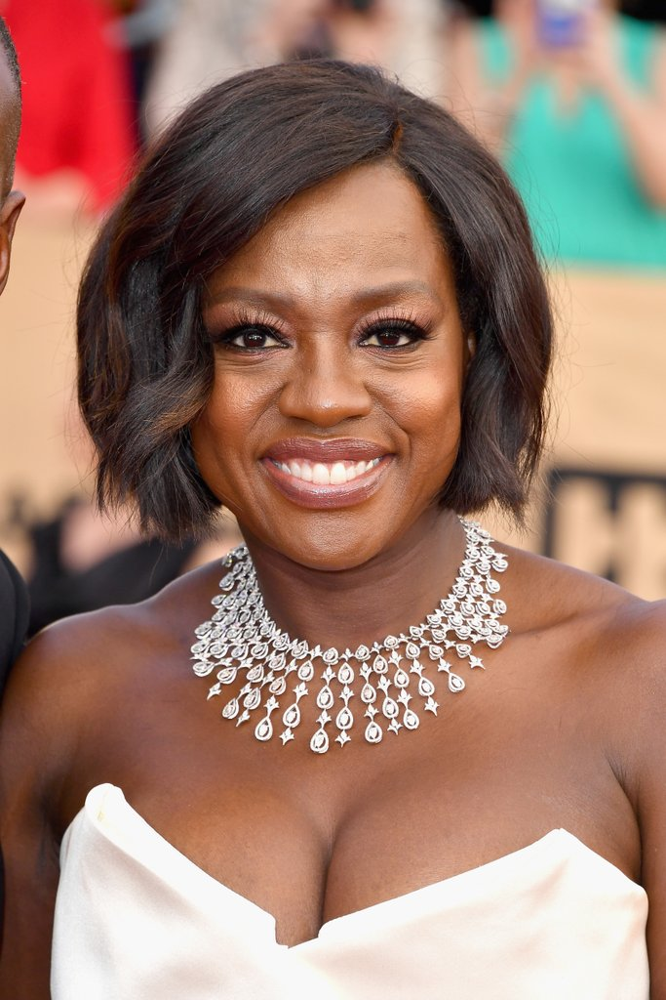
Viola Davis (St. Matthews, 11 de agosto de 1965) é uma aclamada e premiada atriz norte-americana.
Graduada na Juilliard School em 1993, Viola começou sua carreira atuando em peças de teatro
e em papeis coadjuvantes no cinema. Seus primeiros papeis de destaque vieram pelos filmes Kate &
Leopold (2001) e Far from Heaven (2002), e pela série de televisão Law & Order: Special Victims Unit.
Em 2001, ela venceu o Tony Award de Melhor Atriz Coadjuvante em Peça pelo seu papel como
Tonya na produção original de King Hedley II.
- Melhor Ator Coadjuvante - Mahershala Ali
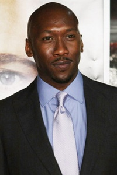
Ali nasceu em Oakland, Califórnia.Ali é talvez mais conhecido por atuar como Richard Tyler na série
norte-americana The 4400. Recentemente, atuou no filme Predators, no qual faz o papel de um criminoso.
O ator atualmente está trabalhando na série House of Cards, como o lobista Remy Danton.
- Melhor Roteiro Original - Manchester à Beira-Mar
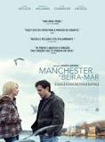
Lee Chandler é forçado a retornar para sua cidade natal com o objetivo de tomar
conta de seu sobrinho adolescente após o pai do rapaz, seu irmão, falecer precocemente.
Este retorno ficará ainda mais complicado quando Lee precisar enfrentar as razões que
o fizeram ir embora e deixar sua família para trás, anos antes. Roteiro escrito por Kenneth Lonergan.
- Melhor Roteiro Adaptado - Moonlight: Sob a Luz do Luar
Crônicas da vida de um jovem negro, desde a infância até a idade adulta, e suas dificuldades para
encontrar seu lugar no mundo, enquanto cresce em um subúrbio de Miami. Roteiro adaptado por Barry Jenkins.
- Melhor Animação - Zootopia: Essa Cidade é o Bicho
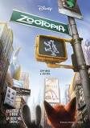
Em uma cidade de animais, uma raposa falante se torna uma fugitiva ao ser acusada de um crime que não cometeu.
O principal policial do local, o incontestável coelho, sai em sua busca.
- Melhor Documentário em Curta-Metragem - Os Capacetes Brancos
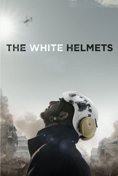
The White Helmets é um filme-documentário em curta-metragem britânico de 2016 dirigido e escrito
por Orlando von Einsiedel e Joanna Natasegara. O filme segue a história de um grupo de voluntários
conhecido como "os capacetes brancos", que protegem sírios da Guerra Civil Síria.
- Melhor Documentário em Longa-Metragem - O.J.: Made in America
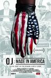
O documentário narra a história do ex-jogador de futebol americano O.J. Simpson e seu caso.
Ele foi acusado de assassinar sua ex-mulher Nicole Brown Simpson e Ronald Goldman em junho de 1994.
O filme tornou-se o filme mais longo a ganhar um Oscar com 7 horas e 47 minutos.
- Melhor Longa Estrangeiro - O Apartamento (Irã)
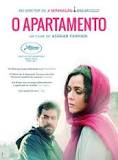
Um casal de atores muda para um novo apartamento, onde a esposa é atacada.
Agora, os dois devem lidar a situação e decidir se querem ou não saber quem foi o responsável.
- Melhor Curta-Metragem - Sing
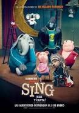
Buster é um coala empolgado que decide criar uma competição de canto
para aumentar os rendimentos de seu antigo teatro.
- Melhor Curta em Animação - Piper

Piper é uma curta-metragem de animação estado-unidense realizada e escrita por
Alan Barillaro e produzida pela Pixar Animation Studios.
- Melhor Canção Original - La La Land: Cantando Estações
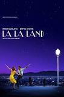
O pianista Sebastian conhece a atriz iniciante Mia e os dois se apaixonam perdidamente.
Em busca de oportunidades para suas carreiras na competitiva cidade, os jovens tentam
fazer o relacionamento amoroso dar certo enquanto perseguem fama e sucesso.
- Melhor Fotografia - La La Land: Cantando Estações
O pianista Sebastian conhece a atriz iniciante Mia e os dois se apaixonam perdidamente.
Em busca de oportunidades para suas carreiras na competitiva cidade, os jovens tentam
fazer o relacionamento amoroso dar certo enquanto perseguem fama e sucesso.
- Melhor Figurino - Animais Fantásticos e Onde Habitam
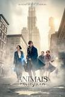
Um excêntrico magizoologista carrega uma maleta cheia de animais mágicos coletados durante
suas viagens pelo mundo. As criaturas acabam saindo de sua mala em Nova York, e agora ele
precisa usar suas habilidades para capturá-las.
- Melhor Maquiagem e Cabelo - Esquadrão Suicida
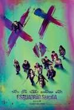
Um time dos mais perigosos e encarcerados supervilões são contratados por uma agência
secreta do governo, para combater uma poderosa entidade. No entanto, quando eles percebem
que não foram escolhidos apenas para ter sucesso, mas também por sua óbvia culpa quando
inevitavelmente falharem, terão que decidir se vale a pena ou não continuar correndo
risco de morte.
- Melhor Mixagem de Som - Até o Último Homem
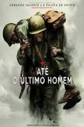
Acompanhe a história de Desmond T. Doss, um médico do exército que, durante a Segunda Guerra Mundial,
se recusa a pegar em uma arma e matar pessoas. Porém, durante a Batalha de Okinawa ele trabalha na ala
médica e salva mais de 75 homens, sendo condecorado, fazendo de Doss o primeiro Opositor Consciente
da história norte-americana a receber a Medalha de Honra do Congresso.
- Melhor Edição de Som - A Chegada
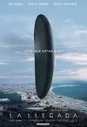
Naves alienígenas chegaram às principais cidades do mundo. Com a intenção de se comunicar com os
visitantes, uma linguista e um militar são chamados para decifrar as estranhas mensagens dos visitantes.
- Melhores Efeitos Visuais - Mogli: O Menino Lobo
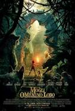
Depois de ter sua vida ameaçada por um temível tigre, Mogli, um menino criado por lobos,
deixa o seu lar na selva e parte em uma viagem de autodescoberta, guiado por uma
pantera austera e um urso alegre e independente.
- Melhor Design de Produção - La La Land: Cantando Estações
O pianista Sebastian conhece a atriz iniciante Mia e os dois se apaixonam perdidamente.
Em busca de oportunidades para suas carreiras na competitiva cidade, os jovens tentam
fazer o relacionamento amoroso dar certo enquanto perseguem fama e sucesso.
- Melhor Montagem - Até o Último Homem
Acompanhe a história de Desmond T. Doss, um médico do exército que, durante a Segunda Guerra Mundial,
se recusa a pegar em uma arma e matar pessoas. Porém, durante a Batalha de Okinawa ele trabalha na ala
médica e salva mais de 75 homens, sendo condecorado, fazendo de Doss o primeiro Opositor Consciente
da história norte-americana a receber a Medalha de Honra do Congresso.
- Melhor Trilha Sonora - La La Land: Cantando Estações
O pianista Sebastian conhece a atriz iniciante Mia e os dois se apaixonam perdidamente.
Em busca de oportunidades para suas carreiras na competitiva cidade, os jovens tentam
fazer o relacionamento amoroso dar certo enquanto perseguem fama e sucesso.